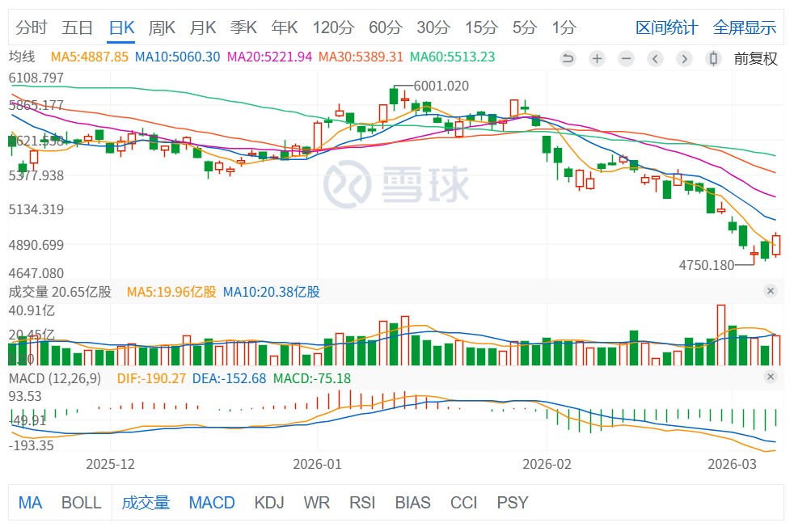

底部确认：从“接飞刀”到“顺风车”的逻辑重构
融合 RSI 动能背离、双底结构验证与均线放量突破：基于“三维共振”评分体系的底部确认逻辑链及 Python 量化实战指南
Created Date: 2026-03-07
在交易市场中，抄底 (Bottom Fishing) 是最诱人也最危险的行为。很多人失败的原因在于将“价格低”误认为是“底部”。
真正的底部不是一个点，而是一个确认的过程。盲目抄底本质上是在对抗巨大的惯性，而一套成熟的“底部确认工具集”，其核心意义就在于寻找从左侧（预判）向右侧（确认）转化的临界点。
在股票技术分析中，底部确认是投资者判断股价是否真正触底反弹的关键步骤。本文将从“接飞刀”到“顺风车”的逻辑重构，深入探讨如何通过融合 RSI 动能背离、双底结构验证与均线放量突破等技术指标，构建一个基于“三维共振”评分体系的底部确认逻辑链。同时，我们将提供一个 Python 量化实战指南，帮助投资者在实际操作中应用这一逻辑链进行底部确认。
1. 核心哲学：为什么要等待“确认”？
在投资领域，最危险的幻觉莫过于“估值足够低，所以价格不会再跌”。以近几个月的恒生科技指数为例，成分股涵盖了腾讯、阿里巴巴、美团等互联网巨头。这些公司基本面强劲，PE（市盈率）低于很多传统行业的蓝筹股。

图示 1 - 恒生科技指数K线图
然而，价格却经历了漫长的阴跌。如果你仅仅因为“PE低、公司好”就贸然入场，往往会陷入“价值陷阱”。
1.1 左侧交易（预判）：与惯性对抗的“接飞刀”
左侧交易者试图寻找那个绝对低点（The Absolute Bottom）。
心里逻辑：我不确定现在是不是绝对低点，但股价已经连续跌了好几天，甚至好几个月了，物极必反，总该轮到它上涨了吧？
常规操作：盲目补仓（Averaging Down），每跌 3% 就加一次仓，试图通过降低持仓成本来期待一个微小的反弹就能回本。
现实风险：市场惯性是极其恐怖的。在宏观环境（如美联储加息、地缘政治）未改善前，好公司也会因为流动性枯竭而不断下探。你以为买在了“地板”上，结果发现下面还有“地下室”，甚至还有“十八层地狱”。这种策略对心理素质和资金链的要求极高，稍有不慎就会在黎明前割肉。
1.2 右侧交易（确认）：与趋势为友的“顺风车”
右侧交易者放弃了买在“最低点”的虚荣心，转而追求“高胜率的转折点”。
心里逻辑：我不确定当前的价格是否为历史最低，但我观察到股价在关键价位已经连续数日不再创出新低。更重要的是，成交量开始温和放大，股价站上了重要的压力线（如 MA20）。这说明大资金已经开始回流，趋势正在反转。
常规操作：等待信号，分批入场。 宁愿在股价从底部回升 5% - 10% 后再买入，也不在下跌途中盲目猜测。
现实优势：此时入场，你是被市场上升的动力“抬”进去的，而不是被下跌的惯性“砸”进去的。你的持仓时间会大幅缩短，资金利用率显著提高。
1.3 底部确认工具集：将主观猜测转化为客观执行
底部确认工具集的存在，本质上是为了解决人性中的贪婪（想买最便宜） 和 恐惧（不敢在反弹时追涨）。
量化过滤：它通过 RSI 动能背离（确认跌不动了）、双底形态（确认支撑稳固）、均线收复（确认趋势扭转）等客观指标，给出一个客观的“评分”。
实战意义：以恒生科技指数为例，当其 PE 处于历史低位时，工具集可能显示“估值分 95，技术分 15”。此时它会冷酷地告诉你：“继续等待，禁止接刀”。只有当技术分也回升至 70 以上时，它才会发出“顺风车已启动”的指令。
估值决定了它值不值得买，而底部确认信号决定了什么时候买。不要用你的本金去测试市场的底线，要用市场的信号来保护你的本金。